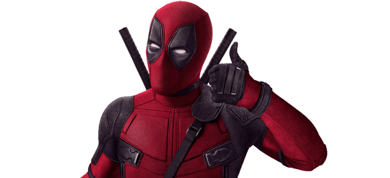
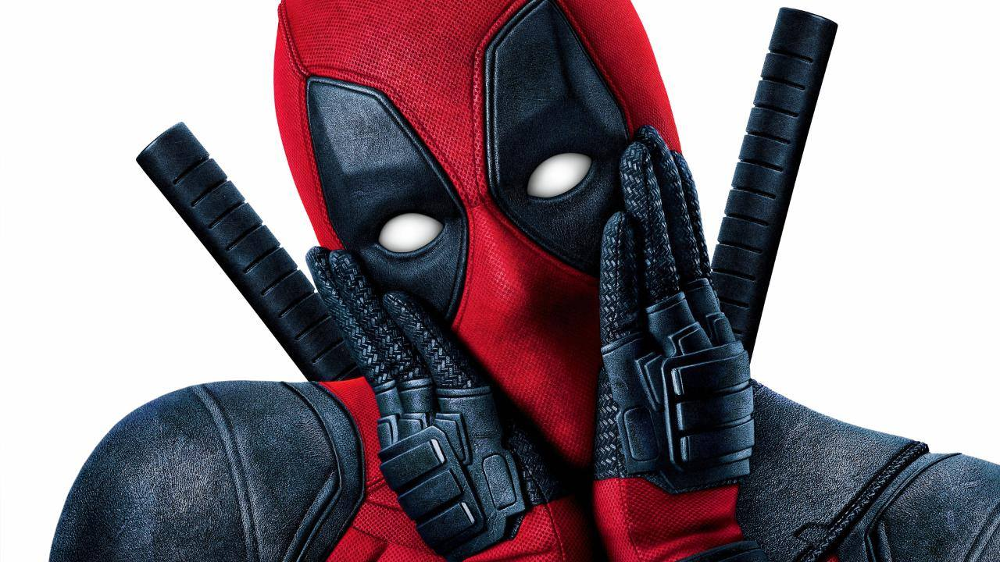

Deadpool
- Home
- Pictures
- Audio
- Video
Hello, i'll show you something specias on my site

Deadpool (Wade Winston Wilson) is a fictional antihero appearing in American comic books published by Marvel Comics. Created by artist/writer Rob Liefeld and writer Fabian Nicieza, the character first appeared in The New Mutants #98 (cover-dated February 1991). Initially Deadpool was depicted as a supervillain when he made his first appearance in The New Mutants and later in issues of X-Force, but later evolved into his more recognizable antiheroic persona. Deadpool, whose real name is Wade Wilson, is a disfigured and mentally unstable mercenary with the superhuman ability of an accelerated healing factor and physical prowess. The character is known as the "Merc with a Mouth" because of his talkative nature and tendency to break the fourth wall, which is used by writers for humorous effect and running gags.
Pictures
 

video
Music